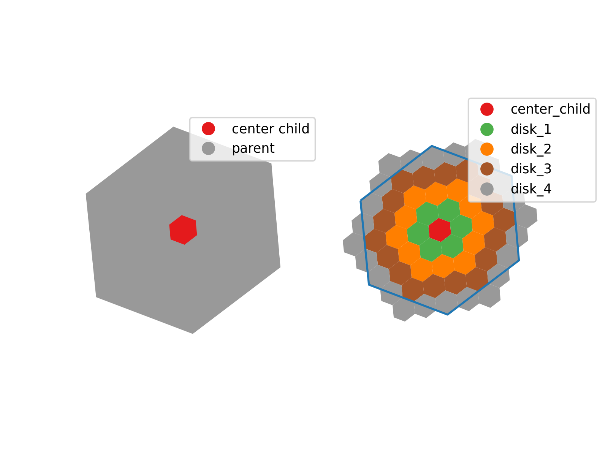
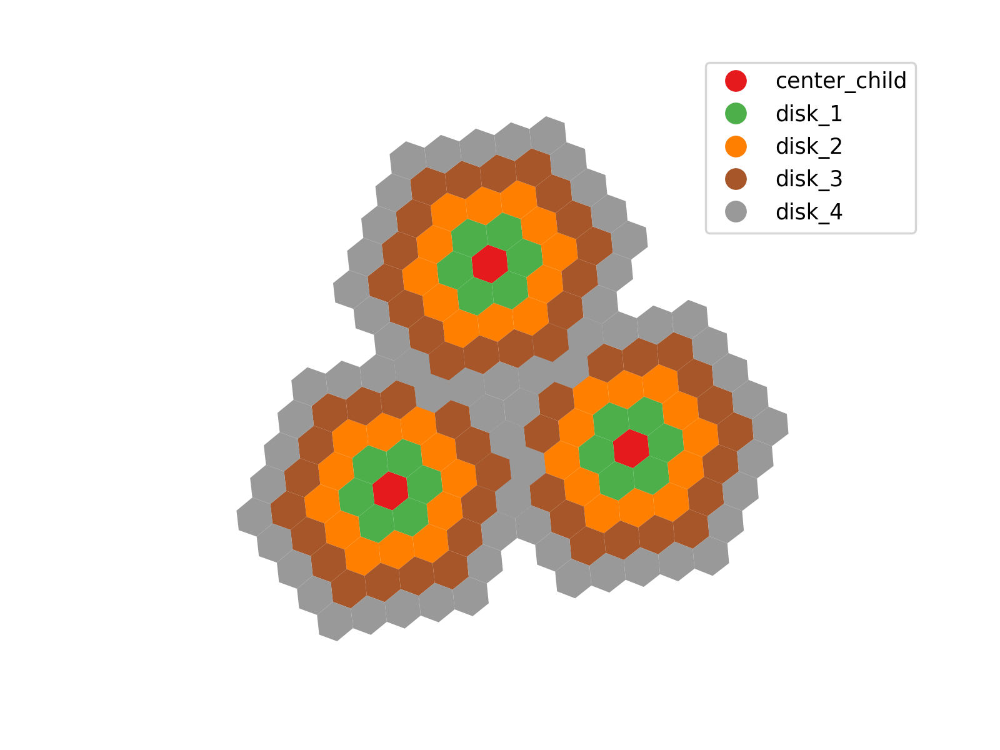

If you’re working with Amazon Web Services (AWS) Athena SQL, chances are that you’ve encountered the following error:
Query exhausted resources at this scale factor
This generally indicates that you are hitting memory limits on the Athena cluster that runs your query (reference 1, reference 2, reference 3). AWS provides several performance optimization strategies, including data optimization, query optimization, and data partitioning.
One approach to bypassing Athena’s resource limitations for large geospatial queries is to break down complex spatial intersections into a series of cascading steps, using a multi-resolution approach. Rather than testing, say, each linestring against all polygons at the highest spatial resolution, one can begin with a lower, coarser resolution, identifying only broad intersections. Once these spatial matches are found, they can serve as a foundation for progressively refined checks at higher resolutions. This effectively narrows down the dataset at each step, reducing the number of intersections that need to be evaluated as the resolution increases.
H3 hexagons provide a natural framework for building this hierarchical structure of intersections by organizing spatial relationships from broader to finer resolutions, moving from parent hexagons to their child hexagons. Each H3 hexagon can be subdivided into smaller hexagons at the next resolution level, so intersections can first be evaluated at a coarser level, where each parent hexagon encompasses multiple child hexagons. This means initial intersections can identify general areas of interest at a lower resolution, while subsequent intersections at higher resolutions focus only on the children of those hexagons where intersections were previously found, reducing the number of comparisons needed at each step and enables scalable geometric operations by narrowing the scope of detailed calculations to smaller, relevant areas.
This strategy avoids the otherwise immense cartesian product that results from a direct intersection of a large number of geometries with a dense, high-resolution grid. By gradually filtering data at each level, the process sidesteps Athena’s memory constraints and makes it possible to perform detailed geospatial operations in stages.
I’m currently working on a project to create a structured, hierarchical database connecting each coarse hexagon in the grid to its finer-resolution counterparts by calculating an optimal disk size for coverage between resolutions. This disk size represents the number of hexagons in the finer grid needed to fully enclose each coarser-resolution hexagon, ensuring that each area in the coarse grid is spatially represented by an equivalent group of smaller hexagons in the next resolution level. The disk size is determined based on the difference between the current and target resolutions, meaning that for each transition to a higher resolution, the algorithm calculates how many neighboring hexagons (in a disk shape) are needed to encapsulate the space covered by the original coarser hexagon.


As the process moves from one resolution level to the next, it generates a series of databases or tables that capture these hierarchical relationships. Starting with an initial set of parent hexagons at a low resolution, each database created at subsequent levels tracks which finer-resolution hexagons correspond to each hexagon at the previous level. The code ensures this by calculating and storing the exact set of finer hexagons (or “disk”) associated with each coarse hexagon. This approach results in a cascading structure of tables, where each level contains a set of spatial mappings that allow intersection operations to proceed in stages, focusing only on increasingly smaller sets of hexagons. This prevents the need for an exhaustive, computationally prohibitive comparison across all hexagons at the highest resolution, enabling efficient and manageable geospatial operations across multiple levels of detail.